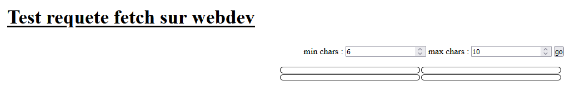
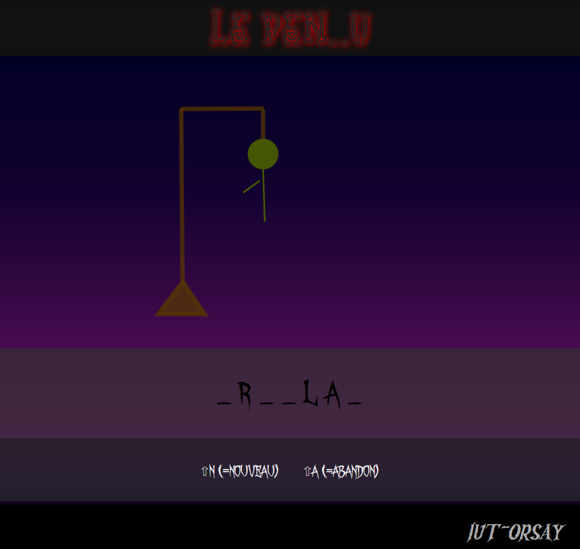

- Dictionnaire
L'ordinateur pioche au hasard dans une liste de mots français. Ces mots sont regroupés selon leur nombre de lettre. Cela pourra vous aider, par la suite, pour définir des niveaux de difficulté
Vous hébergerez cette liste sur le serveur
webdev, sur votre compte, en y ajoutant un servicephpde tirage au hasardDans ce premier exercice nous allons tester cela
-
-
Le fichier dico.php contient le tableau des mots par longueur. récupérez ce fichier, et placez le sur votre espace personnel
-
Au même endroit, définissez un script
proposition.phpqui affiche un mot au hasard (un simpleechode lastringcorrespondante, sans aucune mise en formehtml) -
Pour rendre cette fonctionnalité plus souple, permettez l'envoi de deux paramètres par l'url :
min_charetmax_char. le script les récupèrera grâce à$_GETquand ils sont spécifiés, où choisira deux valeurs par défaut sinon -
Testez directement en utilisant firefox. L'
urldevrait ressembler à ceci :
https://webdev.iut-orsay.fr/~moimoimoi/mon_rep/proposition.php?min_char=7&max_char=9Rafraichissez plusieurs fois pour vous assurer que vous obtenez des mots au hasard, et que le script respecte les bornes de taille choisies
-
-
-
Construisez à présent un document
html, avec deux zones de saisies pour les paramètres, un bouton pour déclencher l'envoi, et quatre zones d'affichage (on va tester par paquets de quatre requêtes). Le résultat espéré est celui-ci : -
Programmez la fonction qui réagit au clic sur le bouton. Elle doit :
-
Récupérer les valeurs saisies pour les deux paramètres
-
Créer la string qui correspond à l'url (celle que l'on a testée à la main au 1.1.d)
-
Lancer quatre
fetchavec cette même url, pour remplir les quatre espaces prévusAttention : lorsque
fetchestfullfiled, il faut:-
en premier lieu une
promisepour extraire lastringobtenue
(rep => rep.text()) -
puis une seconde
promisepour placer cette information dans l'élément
(txt => { el.innerText = txt; }).
-
Remarques :
-
Au niveau du
fetch, prévoir uncatchpeut vous aider à débugger -
Pour que tout se passe bien, votre document
htmlet votre servicephpdoivent être tous deux sur votre espace personnel (on évite ainsi le problème cors)
-
-
-
- Le pendu
A vous de jouer !
- Quelques remarques
-
Vous pouvez utiliser des polices embarquées
-
Vous pouvez dessiner complètement le pendu en svg, puis nommer (
id) les morceaux que vous voulez faire apparaître lors des erreurs (et les organiser dans une liste, par exemple) -
Vous savez déjà réagir aux frappes au clavier. Pour distinguer les commandes (nouvelle partie et abandonner partie) vous pouvez en plus détecter la touche
shift(ou une autre si vous préférez)
-
- Pour aller plus loin
Si le coeur vous en dit, vous pouvez :
-
Rajouter des commandes de configuration (pour
min_charetmax_char, par exemple) -
Saisir un nom de joueur
-
Définir une table dans la base avec les joueurs, leurs mots de passe, et les highscore
-
Rajouter un script
phpde contrôle du mot de passe -
Rajouter un script
phpd'enregistrement du nouveau highscore -
Historiser une statistique des mots les plus durs et les plus faciles à trouver au fur et à mesure des parties
-
Exploiter cet historique pour redéfinir les niveaux de difficulté du jeu
-
- Quelques remarques